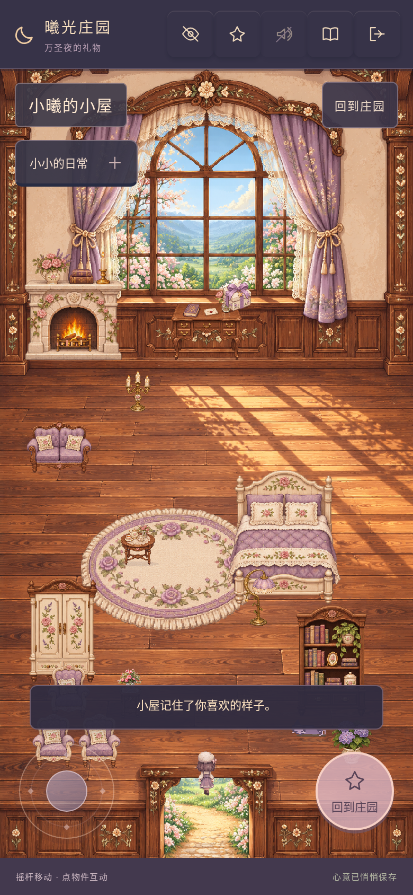
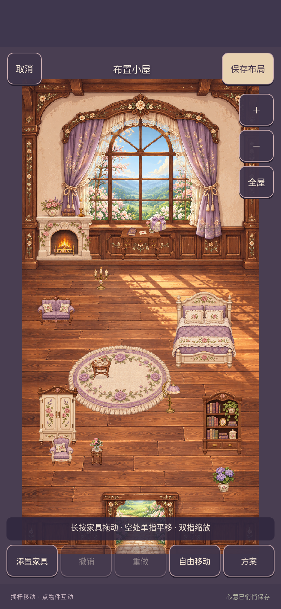
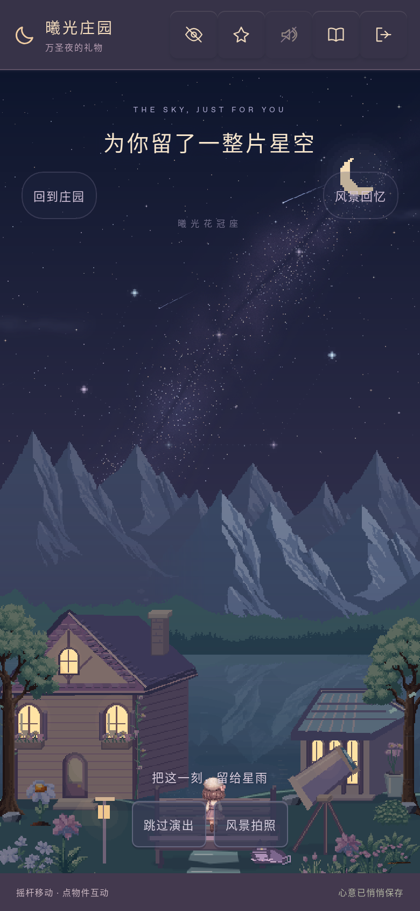
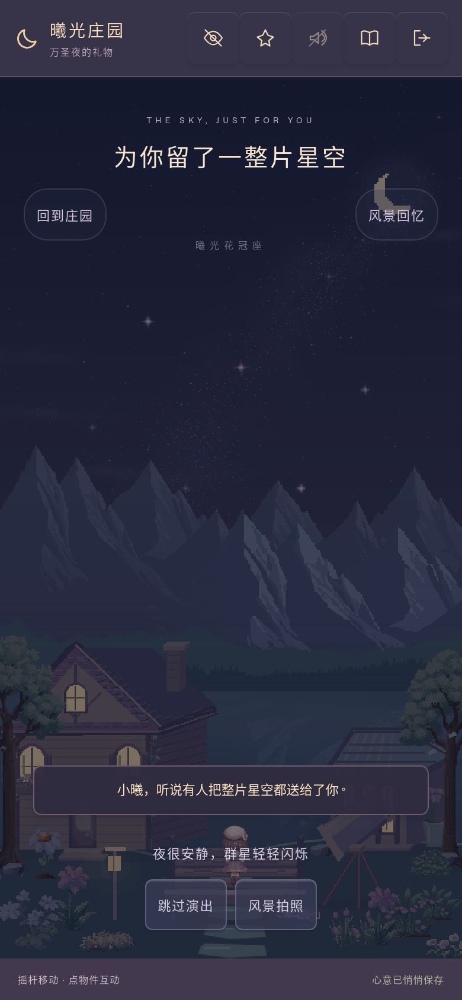
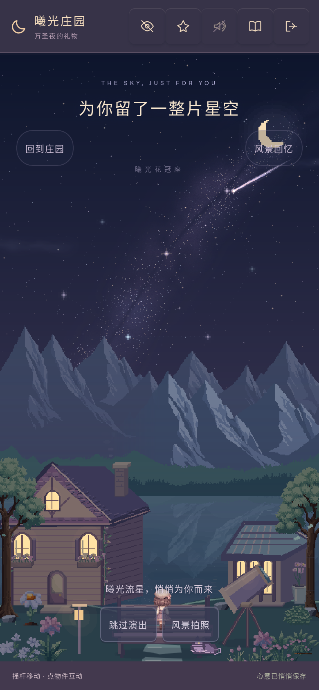

自由装修与星雨
图片和视频全部来自实际运行的 Phaser 游戏。手机视口 390×844（另有 375×667），没有使用概念图替代实机。
同一间小屋，可以摆成不同模样

原来的高清房间和透明家具素材完整保留。床、书柜、衣柜、壁炉等可以移动；同类家具以独立实例保存。地毯在家具下方，墙饰有单独区域。

试玩：庄园地图 → 小屋 → 小小的日常 → 布置小屋。
添置家具可以再放同一种；选中后可翻转、单件收纳。方案中可恢复默认、保存和应用多套布置。
更有呼吸感的 34 秒星雨



正常速度录屏
约 36 秒的实机片段，保留原始播放速度。三套编排轮换重播，保留接星、许愿、星星糖果和跳过；独立极光没有加入流星雨。
验证与范围
Chromium / WebKit 手机视口回归、真实触摸长按与双指缩放、生产构建完整缓存、关闭浏览器后断网重开与装修存档恢复。实体 iPhone / 安卓设备仍需玩家验收。
家具沿用现有正面高清素材，提供镜像翻转；没有素材支持的侧面不会用图片硬转 90° 冒充。装修范围仍是原小屋，门口与窗边、每件互动家具需要能走到。